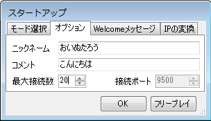
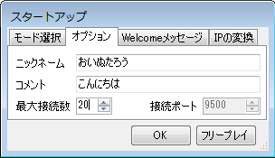

| ・ネット対戦 | |||||||||||||||||||||||||
| 公式サイトの「ネット対戦部屋」で、「MTSP」と言うツールをDLし、使うことによって、離れたプレイヤー同士で対戦することが出来ます。 使い方 DLし、解凍したフォルダ内の「MTSP.exe」をダブルクリックし、起動します。 ・「モード選択」タブ 
・「オプション」タブ 
・「・Welcomeメッセージ」タブ  サーバーを立てる場合に使用します。 接続した人に対して、最初に表示されるメッセージです。 サーバーの説明や、挨拶、注意点等、自由にお書きください。 ・「IPの変換」タブ 
|
|||||||||||||||||||||||||
| ・ネット対戦 | |||||||||||||||||||||||||
| 公式サイトの「ネット対戦部屋」で、「MTSP」と言うツールをDLし、使うことによって、離れたプレイヤー同士で対戦することが出来ます。 使い方 DLし、解凍したフォルダ内の「MTSP.exe」をダブルクリックし、起動します。 ・「モード選択」タブ
・「オプション」タブ 
・「・Welcomeメッセージ」タブ サーバーを立てる場合に使用します。 接続した人に対して、最初に表示されるメッセージです。 サーバーの説明や、挨拶、注意点等、自由にお書きください。 ・「IPの変換」タブ
|
|||||||||||||||||||||||||